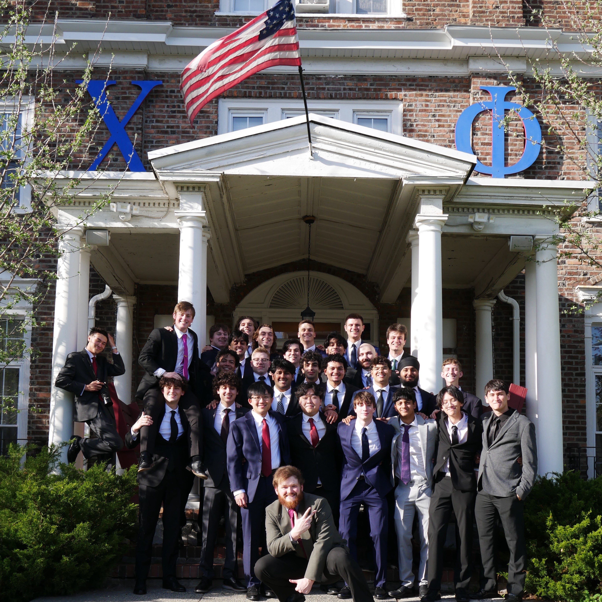
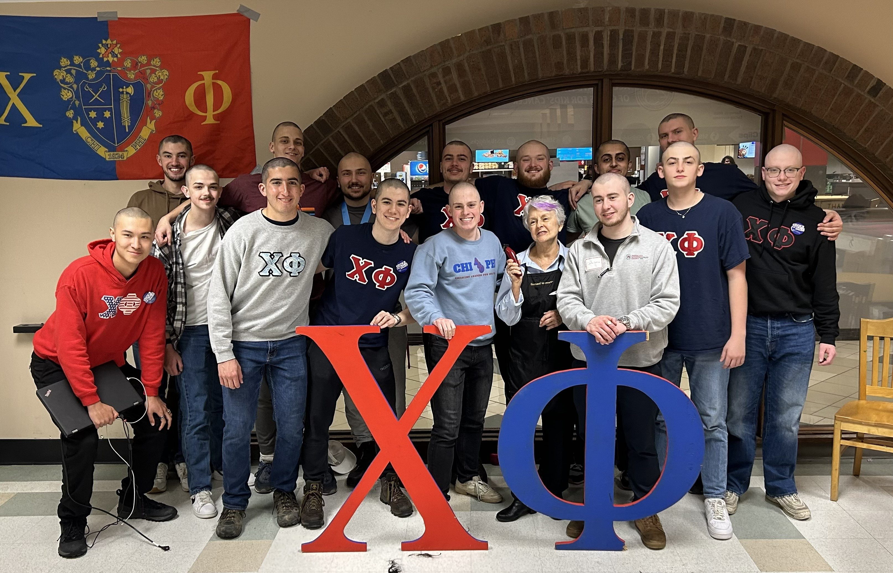
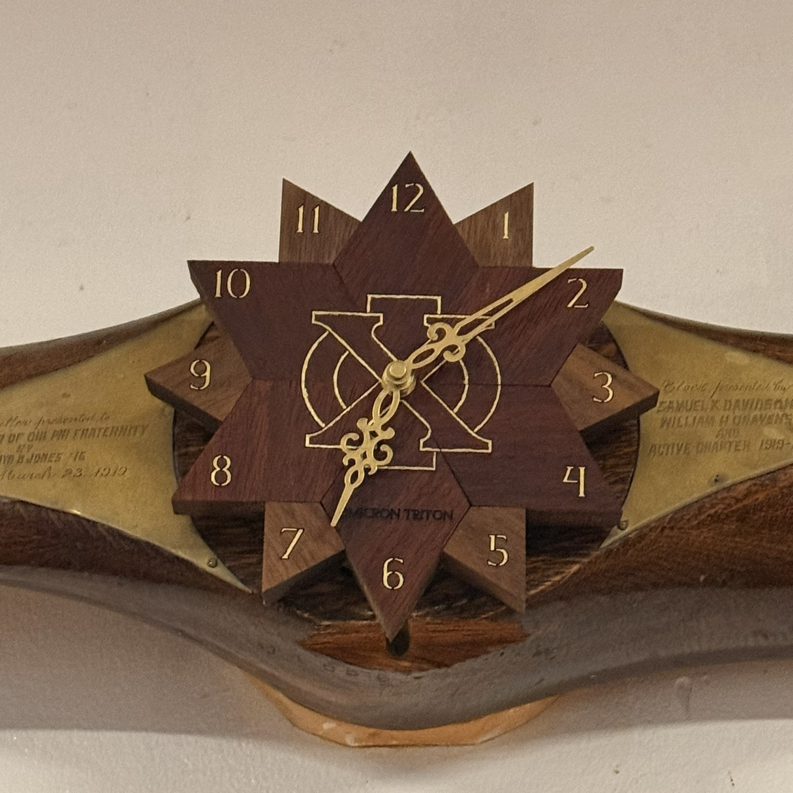
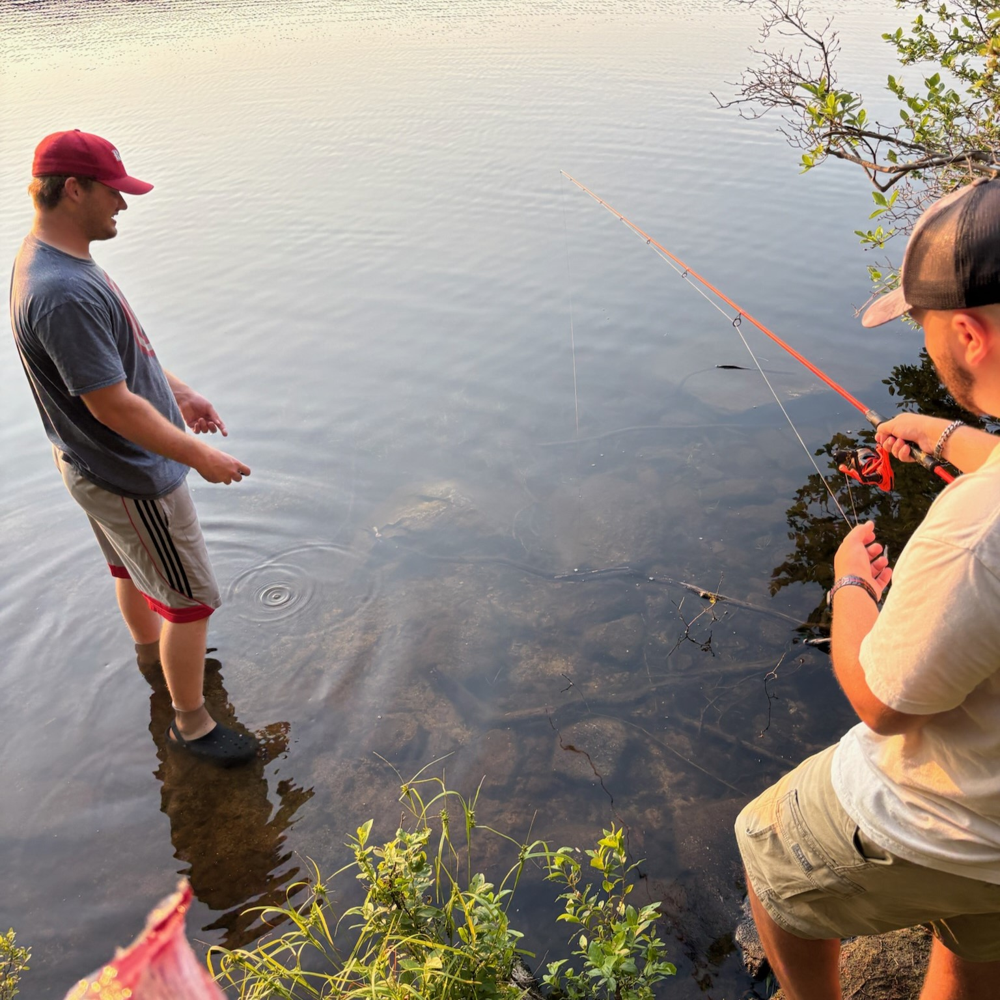
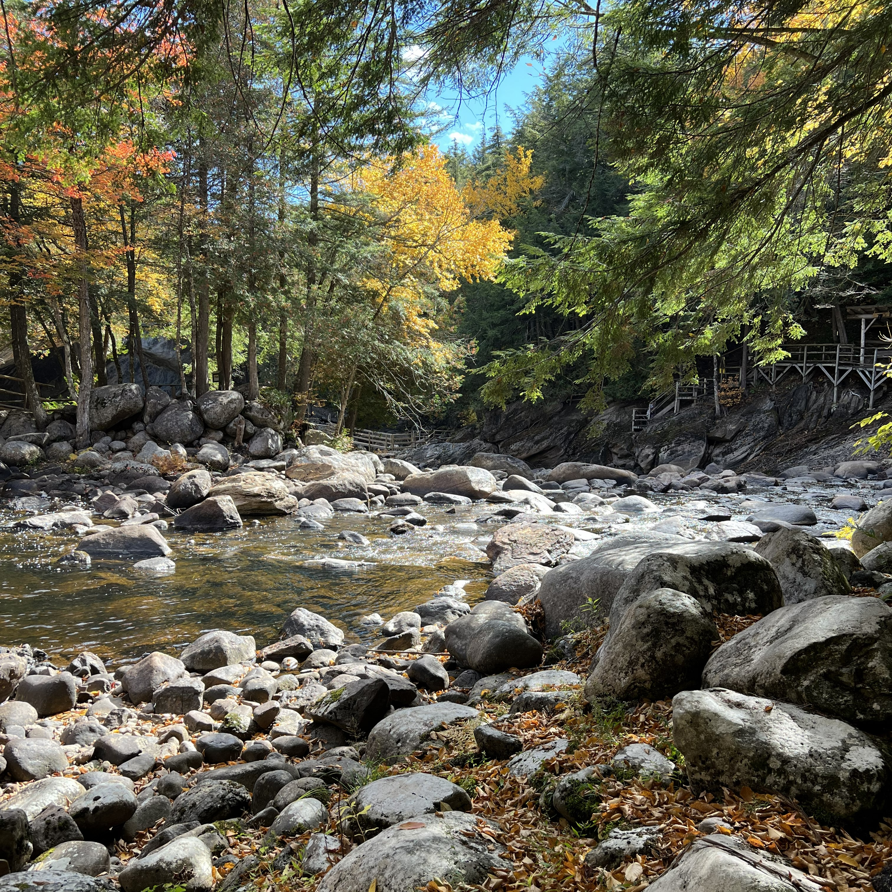
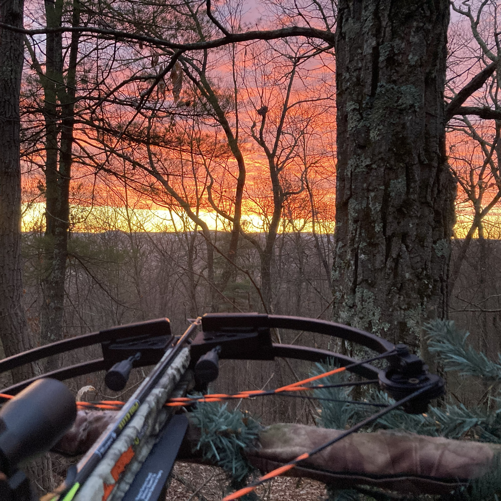

Engineering & Projects
My main interests lie in embedded systems, microcontrollers, and hands-on hardware design. I love working at the intersection of software and electronics, where theoretical concepts come to life as real-world systems.
Many of my projects focus on reliability, thoughtful design, and practical functionality rather than unnecessary complexity. The process of taking a project from concept to completion, through CAD design, prototyping, testing, and iteration, is where I thrive.


Community & Brotherhood
I’m also a proud member of the Theta Chapter of the Chi Phi Fraternity, the oldest social fraternity in the United States. Being part of Chi Phi has shaped my college experience through leadership, brotherhood, and service.
Our chapter actively supports causes like Saint Baldrick’s childhood cancer research and RAINN, and these experiences have reinforced my values of accountability, teamwork, and giving back.



Outdoors & Personal Interests
When I’m not building or studying, you’ll likely find me outdoors, fishing, or engaging in other DIY and hands-on activities.
These pursuits help me cultivate patience, discipline, and problem-solving skills while providing a balance to my academic and technical work.



Values & Looking Forward
I value personal responsibility, hard work, and respect for those who serve our communities and country. These principles guide how I approach my education, projects, and life.
I’m always looking to expand my skills, take on new challenges, and continue learning. This website is a living portfolio of my work, interests, and growth as an engineer, builder, and individual.